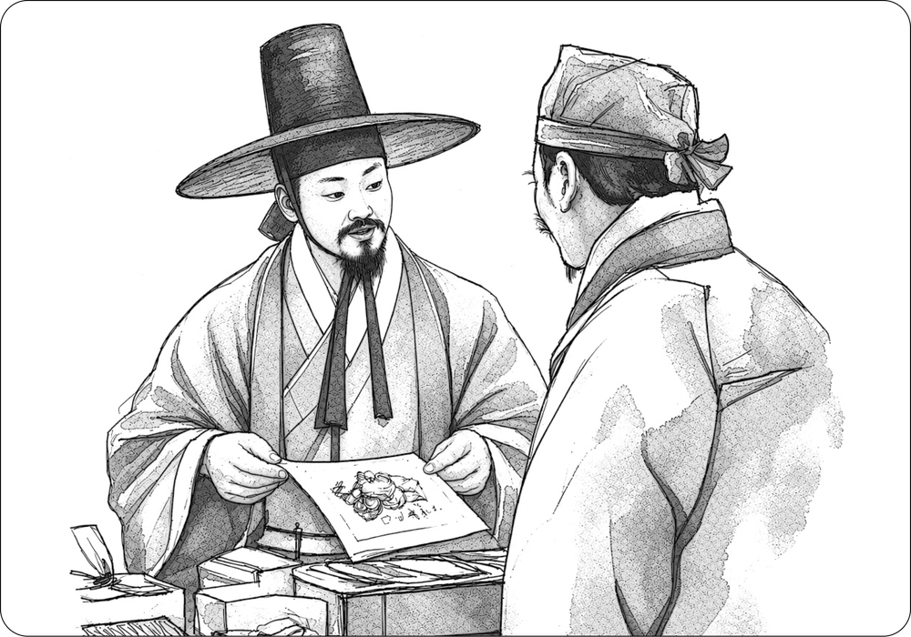

An Anecdote Concerning Wanwigak

Yi Ha-gon’s zeal for acquiring fine calligraphy and paintings was extraordinary. It is said that if he encountered a masterpiece while traveling, he would even trade the clothes off his back to obtain it.
One famous story involves Mangcheonjeodo, a painting by Jeong Seon. Yi Ha-gon and Shin Jeong-ha competed to acquire the painting, and Yi ultimately prevailed. The episode is recorded in his literary collection, Dutacho:
“When I look at this album, the brushwork is utterly free of vulgarity, and it deserves to be treasured. Ilwon does not understand painting and is therefore unfit to keep it, though his poetry is beautiful enough to complement the painting. [...]
In Wanwigak Pavilion, there are only a few dozen old paintings, none by recent artists. This shows that I have not collected many paintings and have not been eager to acquire them. Yet Jeongbo mocks me, saying that although I already possess many, I still covet more. He hopes that Ilwon’s affection for the painting will diminish so that he can profit from the situation, like the fisherman who benefits from the struggle between the snipe and the clam. But Ilwon is no child. Why would he let such a treasure slip away into the clouds and mist?
Jeongbo’s old habit has returned once again. I can only laugh.”
Wonbaek was the courtesy name of Jeong Seon (1676–1759), the painter of Mangcheonjeodo. Ilwon was the courtesy name of Yi Byeong-yeon (1671–1751), who owned the painting at the time. Jeongbo was the courtesy name of Shin Jeong-ha (1681–1716), who vied with Yi Ha-gon to acquire the painting. In his attempt to secure the painting, Shin Jeong-ha disparaged Yi Byeong-yeon as someone who did not understand painting and accused Yi Ha-gon of coveting yet another work despite already owning many.
Yi Ha-gon and Yi Byeong-yeon were fellow disciples of Kim Chang-hyeop and Kim Chang-heup. Shin Jeong-ha was a pupil of Bak Se-chae and was also close to Yi Byeong-yeon. Jeong Seon frequented Kim Chang-heup’s circle as a painter. The contest over Mangcheonjeodo was therefore less a serious conflict than a playful exchange among closely connected literati.